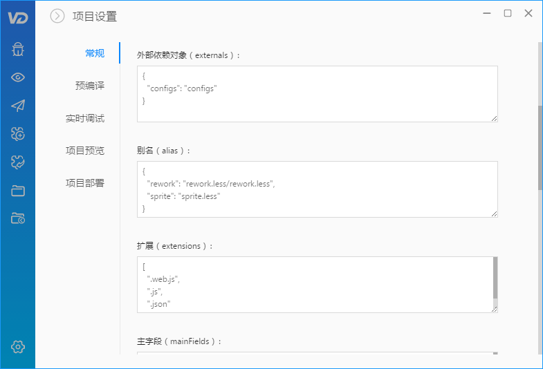

外部依赖对象
有些特殊场景下，需要为应用提供全局对象。比如，接口域地址随着部署环境不同而不同的情况下。VD 提供了外部依赖对象的功能，可以解决上述情形。
VD 默认提供了一个叫 configs 的全局变量，允许你的在任何地方调用，包括组件内部（无需导入）。
要使用 configs 变量，首先需要定义 configs 的内容（在 index.ejs 内）：
<script type="text/javascript">
var configs = {
appName: 'test'
};
</script>
然后，在任何地方调用它，以下为在组件内部调用：
// Main.js
const Main = () => (
<div>
{ configs.appName }
</div>
);
需求自定义全局变量名称，可通过 VD 的 项目设置 > 常规 > 外部依赖对象 进行更改：
